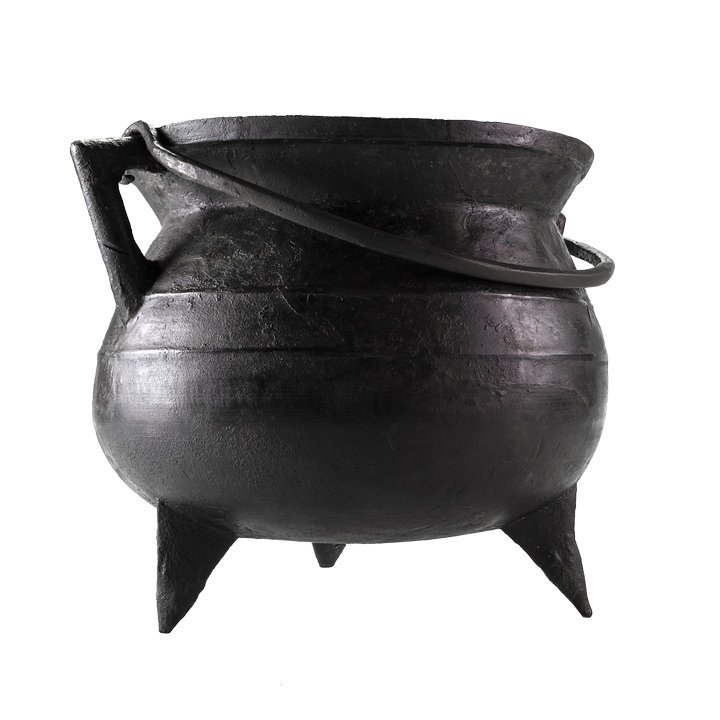

De grape van Dalfsen.
Deze bronzen grape is gevonden in 2005 bij de wijk Gerner Marke in Dalfsen. De pot dateert uit de 15e eeuw. Een grape is een kookpot op drie pootjes. Zo stond hij stevig in het vuur. Met het hengsel werd het boven het haardvuur gehangen. Dit exemplaar is groot: bijna 30 centimeter hoog. Brons was kostbaar en werd vaak hergebruikt. De pot werd in stukken gevonden en later gerestaureerd. Soms worden grapen in rivieren of natte gebieden gevonden. Dan kan het gaan om een bewuste achterlating. Of dat hier ook zo is, weten we niet zeker. De vondst laat het belang zien van kookgerei in het dagelijks leven.